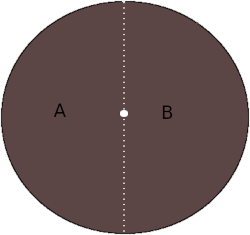

How to in GIMP?
Draw a Dotted Line
The simplest way to make a dotted line in GIMP is by drawing out the line using the Path tool and then applying a stroke to it. Then click the Stroke Path button and eventually modify the Line Style.
Get a transparent backgorund
Volendo far diventare il colore dello sfondo trasparente andare su "Colors" poi Color to Alpha:
Se accade che l'opzione Color to alpha non è selezionabile bisogna andare a Layers, poi Add Alpha Channel.
Un'altra possibilità è di andare su "Image" poi "Mode" e selezionare RGB, a questo punto l'opzione "Color to Alpha" dovrebbe essere attiva.
Ultimo rimedio è utilizzare il Fuzzy Select Tool (bacchetta magica) selezionare il colore e tagliare.
3rd Possibility
Select white as the background color and do image->flatten image. Flatten image uses the currently selected background color from the gimp color selector. If the alpha channel is not clean, you did not get a clean white after flattening. After flattening you don't have opaque anymore but gray, so we need to use the "levels tool" in "Colors" to tweak the background until it becomes white. Then go to "Color to Alpha" and turn the white background to transparent.
Flatten Image
The Flatten Image command merges all of the layers of the image into a single layer with no alpha channel. After the image is flattened, it has the same appearance it had before. The difference is that all of the image contents are in a single layer without transparency. If there are any areas which are transparent through all of the layers of the original image, the background color is visible. This operation makes significant changes to the structure of the image. It is normally only necessary when you would like to save an image in a format which does not support levels or transparency (an alpha channel). You can access this command from the image menubar through Image → Flatten Image.